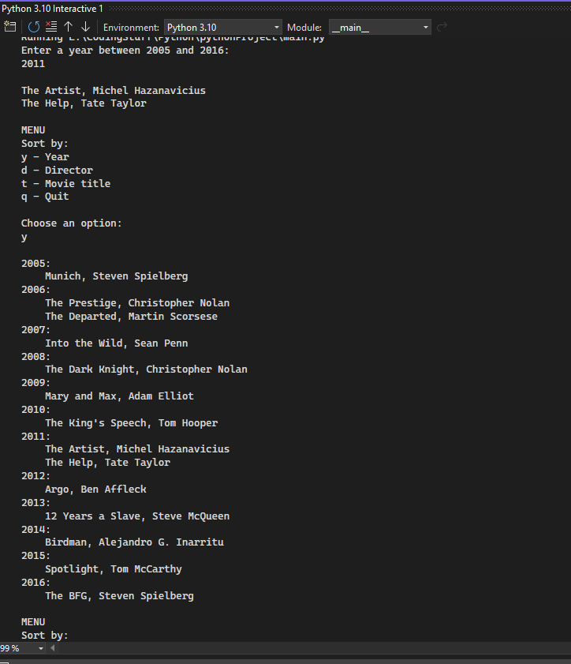
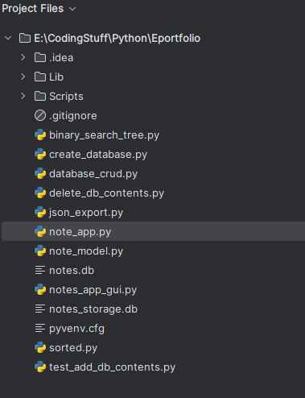

This is my final for the Southern New Hampshire University CS-499 Computer Science Capstone. This eportfolio contains a narrated code review, enhancements to be completed accross the three major graded areas: Software Design and Engineering, Algorithms and Data Structures, and Databases. I have decided to approach this project from the perspective of my first failure within the program to show how much I have grown.
Note:
As I discuss my approach to this project I picked one of my first programs I wrote for this program. This first application that I wrote didn’t work, but that’s why I picked it. I hope to showcase my growth by taking a simple program and layering on top of the core idea of it to display my programing skillset.
I started my journey with Southern New Hampshire University in 2017. Looking back at the time that I spent at the school I can say that I have learned a lot. My approach to learning has changed over the years but there are a few things that have changed. With my journey coming to an end this semester, I have taken the time to reflect on what made this degree worth it. When it comes to a professional assessment, I can say that I have grown, and that I am walking away with a “tool bag” full of tools that I can use to solve a litany of problems. The project that I based all my final project on was a failure for me, I couldn’t complete the project satisfactorily in any meaningful way. It took me several weeks of troubleshooting after the introduction to python course ended before I understood fully what I did wrong.
Taking that lesson in stride I learned my first real lesson from this degree plan, plan to fail. I don’t ever plan on getting things right the first time and have learned that building in time to fail multiple times before the deadline is necessary for me. The second lesson that I have learned is to give myself time to draw up my solution. I built the scaffolding for this final project out on my dry erase board in my office. This allowed me to visualize what I was going to create, and how it would function. I also learned my final lesson in the capstone, relax. No matter how much stress I cannot be perfect, but I can get close to perfect. I have learned how to take and build in time to relax, and the results for my projects have been amazing. I have found that my productivity has gone up, and I’m not worried about the time left before the assignments are due.
In this final project you will find that I have built an application that supports the following: a flexible product for collaborating in a team environment, competency with communicating with stakeholders, data structures and algorithms, and databases, and security.
The structure of my project lends itself to the iterative nature of software development using documentation and comments to clearly define what is happening and why it is happening within the code base. By understanding the rubric and communicating with the professor on this project and my code review I have shown my ability to communicate with stakeholders. The inclusion of the binary search tree and the quick sort algorithms show my understanding and implementation of them. Finally, by building and designing an interface for a locally stored database shows my understanding and design of database theory.
The project that this is based on is from my first year as a student in the Computer Science program. It was a terminal application that allowed the user to filter movies based of off their title. It can be found in the main.py file. It’s output and running environmment looked like this:
When looking at the layout of my final project when compared to my starting artifact it can be seen that I broke things down in to more manageable pieces, this has two purposes. First, it allowed me to build code that is inline with best coding practices. This code along with being both modular and reusable allows another developer to come after me and understand what the codes functions are because of the clear commenting. Part of pythonic development is to build reusable, clean, and concise code. Second, the code that I developed allows the user to pick the implementation of the application. With a few changes the code can be migrated to use a cloud service.
The reason I picked the layout that I have for this project is because I wanted to showcase my understanding of application design. Modular code makes troubleshooting much easier, and gives developers flexablity within the design process to add and remove portions of code without fear of breaking the whole code base. I could have broken the code down even more, but in keeping with the design philosophy of python I kept things simple and straight to the point.
By following the pythonic naming conventions and layout I have made this application easy to understand, modify, and to replicate. This is how I was able to develop and show the use of computer scicene skills within a collaborative environemnt that allows a wide range of users to benefit from the applicaiton.
Building on the theme of understanding and showcasing my growth throught this program I have modified my original dictionary application to utlize data structures and algorithms for the search functions. I struggled with both understanding and implementing the quick sort and the binary search tree when I first encountered them. By folding them sucessfully into this project I have shown my mastery of implementation and understanding. I picked these two algorithms not only because they are both have their own strenghts and weaknesses. I am partial to the binary search tree and it's implementation, it is enabled by default, because of how hard I had to work to learn it. Quick sort was also hard for me to learn, but I learned it faster after putting in time learning the binary search tree. These algorithms have different time complexitites. Quick sort is commonly used when sorting large datasets and has a time complexity of O(n log n). This would be ideal if the need to scale this project to a larger number of users. While the binary search tree is more efficent when it comes to searching and maintaining already sorted data, and has a time complexity of O(log n).

I have incorporated these algorithms within my project by providing a drop down where the user can pick the way their data is sorted. The applicaiton will then return the amount of time it took to return the information, showing real-time the difference between the two algorithms.
When it came to learning databases I struggled a lot. Mostly with the testing and troubleshooting portions of the course. I again desided to fold my first failure into this portion of the assignment by building a locally stored database. Included within the file structure of the application there are a number of scripts. The first script that I would call to your attention is the create_databases.py. This script allows the user to create the database that the application will use to store to users notes. For testing I also created two additional scripts test_add_db_contents.py and delete_db_contents.py. These scripts work together to load information into the database for testing and allow for user to empty the database whenever they are done. Finally, I created a script that allows the user to convert a note or a range of notes into JSON files. This will allow the user to transfer their notes to another database platform if they desired.